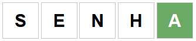

Descubra a senha em até 6 tentativas
Cada tentativa deve ser uma palavra válida de 5 letras.
Depois de cada tentativa, a cor dos quadrados irá mudar:
A letra "A" está na posição certa.
A letra "R" faz parte da senha, mas está na posição errada.
A letra "M" não faz parte da senha.
RLWorks 2024 itch.io